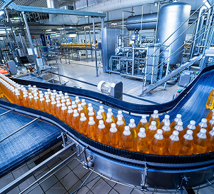
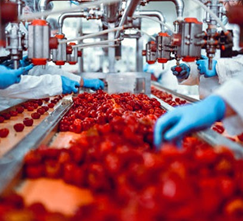

Business Turnaround
Revitalizing Operations, Maximizing Value
Business Turnaround
- When performance stalls or margins shrink, businesses need more than quick fixes they need a clear path back to profitability and a disciplined strategy for sustainable growth.
- With transformation in motion, performance tracking systems are embedded to provide leadership with real-time visibility into key metrics, enabling agile decision-making and early course correction.
- Recognizing that change must be adopted to succeed, FyndSol implements tailored Change Management strategies, engaging teams across levels, addressing resistance, and building internal momentum for the new direction.
- Execution is governed by strong project management, ensuring each initiative is delivered on time, within scope, and fully aligned with turnaround objectives.
- FyndSol partners with leadership teams to drive this turnaround with precision, structure, and lasting impact.
Business Turnaround Strategy
Helping organizations reset, refocus, and return to profitable growth with a structured roadmap for recovery and scaling.
Financial Modelling & Strategy
We don’t just forecast; we test assumptions and identify profit levers to align capital with your most critical business priorities.
Transformation Initiatives
Executing a structured shift toward health by targeting core drivers of inefficiency and underperformance across cost and revenue models.
Strategic Leadership Support
FyndSol acts as a dedicated partner to leadership, providing the insight and structure needed to ensure a focus on recovery and future growth.
Reset & Profitable Growth
Finalizing the reset to enable organizations to refocus and scale operations with renewed market confidence and margin stability.
The FyndSol Impact
- ✓ Stabilizing margins and cash flow
- ✓ Realigning strategy for immediate recovery
- ✓ Building scalable, market-ready revenue models
- ✓ Bridging the gap between stagnation and growth
- ✓ Mentoring founders through operational shifts
Key Focus Areas
Retail

Manufacturing
